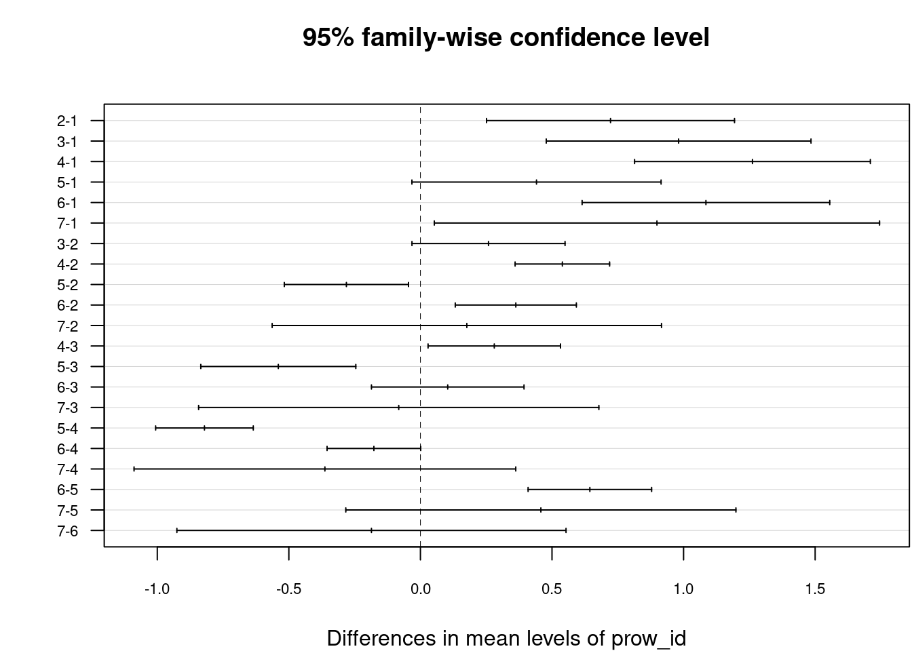
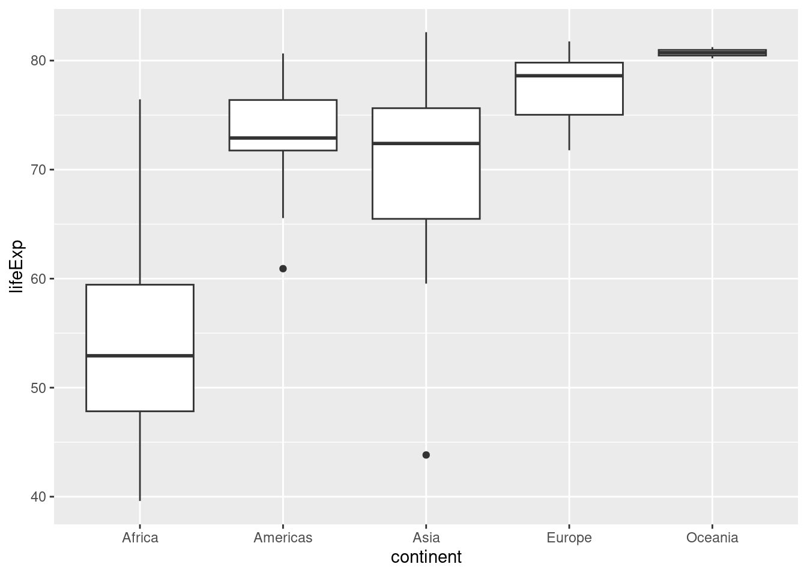
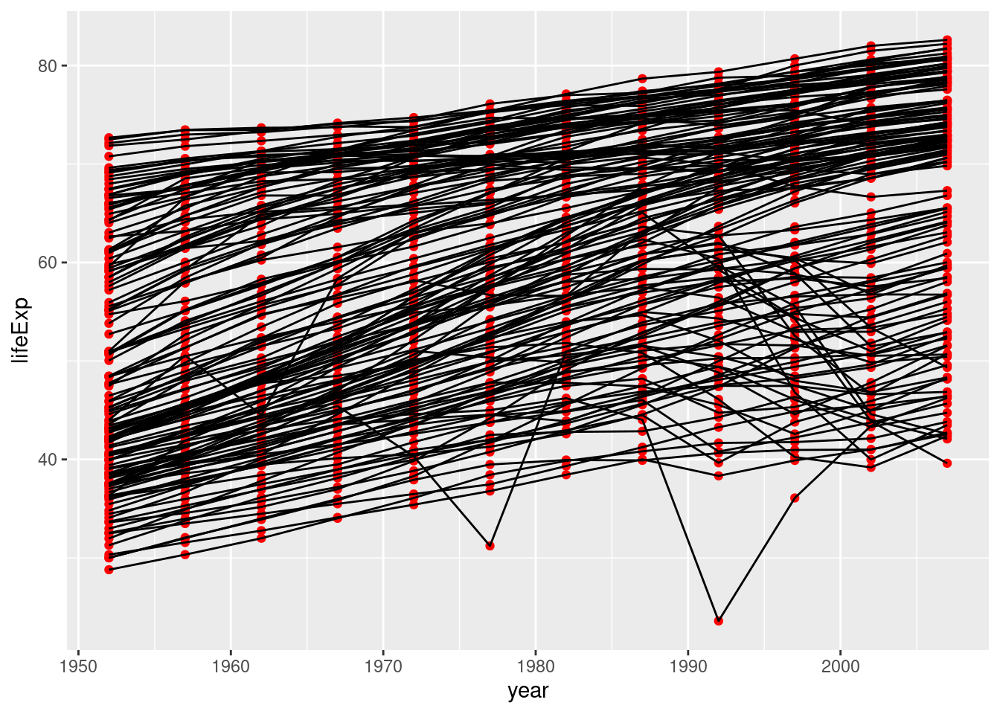

library(tidyverse)16 Testy dla wielu grup
16.1 Testowanie istotność różnic średnich wielu prób
Parametryczne
- Jednoczynnikowa analiza wariancji (ANOVA)
- Test Tukey’a (HSD)
Nieparametryczne
- Test Kruskala-Wallisa
- Test Friedmana
16.2 Analiza wariancji
- Celem analizy wariancji (ANOVA) jest zazwyczaj testowanie istotności różnic pomiędzy średnimi w wielu grupach.
- Służą do oceny czy średnie wartości cechy Y (cecha ilościowa) różnią się istotnie pomiędzy grupami wyznaczonymi przez zmienną X.
- W analizie jednoczynnikowej badamy zależność pomiędzy cechą Y a jedną zmienną jakościową.
- Hipoteza zerowa - średnie w grupach są jednakowe: \(H_0: \mu_1 = \mu_2 = ... \mu_k\)
- Hipoteza alternatywna: \(H_A\): co najmniej dwie średnie różnią się między sobą.
- Analiza wariancji nie pozwala stwierdzić pomiędzy którymi grupami występują różnice.
- Aby określić między którymi grupami występują różnice trzeba wykonać porównania wielokrotne (“post-hoc”)
16.2.1 Podstawowe założenia
- Zmienna w każdej z analizowanych grup ma rozkład zbliżony do rozkładu normalnego.
- Wariancje w grupach są do siebie podobne.
- Próby zostały losowo wybrane z populacji.
Przykład: Czy średnia roczna temperatura powietrza różni się istotnie między prowincjami?
pomiary_pol = read.csv("data/pomiary_pol.csv")
pomiary_pol$prow_id = as.factor(pomiary_pol$prow_id)
summary(pomiary_pol) pomiar_id tmin_4 tmax_4 tmin_9
Min. : 1.0 Min. :-4.592 Min. : 1.824 Min. : 2.118
1st Qu.: 375.8 1st Qu.: 3.116 1st Qu.:12.505 1st Qu.: 8.500
Median : 750.5 Median : 3.515 Median :13.242 Median : 8.886
Mean : 750.5 Mean : 3.342 Mean :12.973 Mean : 8.840
3rd Qu.:1125.2 3rd Qu.: 3.803 3rd Qu.:13.620 3rd Qu.: 9.232
Max. :1500.0 Max. : 4.894 Max. :15.100 Max. :11.248
NA's :5 NA's :5 NA's :5
tmax_9 annual_tavg annual_precip prow_id
Min. : 8.748 Min. :0.1083 Min. : 493.0 4 :857
1st Qu.:17.719 1st Qu.:7.1123 1st Qu.: 546.3 6 :179
Median :18.340 Median :7.6000 Median : 578.6 2 :175
Mean :18.220 Mean :7.5828 Mean : 602.2 5 :163
3rd Qu.:18.847 3rd Qu.:8.2000 3rd Qu.: 636.0 3 : 82
Max. :20.100 Max. :9.1997 Max. :1548.8 (Other): 33
NA's :5 NA's :5 NA's :5 NA's : 11
woj_id prowincja wojewodztwo
Min. : 0.000 Length:1500 Length:1500
1st Qu.: 4.000 Class :character Class :character
Median : 8.000 Mode :character Mode :character
Mean : 8.448
3rd Qu.:13.000
Max. :16.000
NA's :10 pomiary_anova = aov(annual_tavg ~ prow_id, data = pomiary_pol)
pomiary_anovaCall:
aov(formula = annual_tavg ~ prow_id, data = pomiary_pol)
Terms:
prow_id Residuals
Sum of Squares 144.4723 794.4199
Deg. of Freedom 6 1478
Residual standard error: 0.7331416
Estimated effects may be unbalanced
15 observations deleted due to missingnesssummary(pomiary_anova) Df Sum Sq Mean Sq F value Pr(>F)
prow_id 6 144.5 24.079 44.8 <2e-16 ***
Residuals 1478 794.4 0.537
---
Signif. codes: 0 '***' 0.001 '**' 0.01 '*' 0.05 '.' 0.1 ' ' 1
15 observations deleted due to missingness16.3 Test Tukey’a
- Wynikiem testu Tukeya są różnice między średnimi oraz 95% przedział ufności dla tych różnic dla każdej pary porównań.
- Wynik jest pokazywany w postaci numerycznej i graficznej.
- Szukamy takich par, dla których przedział ufności średnich nie przecina 0, wskazując na statystycznie istotne różnice między grupami.
Graficzna reprezentacja wyniku – przedziały ufności dla różnic w średnich rocznych temperatur między prowincjami.
posthoc = TukeyHSD(pomiary_anova, which = "prow_id",
conf.level = 0.95)
posthoc Tukey multiple comparisons of means
95% family-wise confidence level
Fit: aov(formula = annual_tavg ~ prow_id, data = pomiary_pol)
$prow_id
diff lwr upr p adj
2-1 0.72245605 0.25130020 1.193611892 0.0001312
3-1 0.98118324 0.47813550 1.484230991 0.0000002
4-1 1.26183184 0.81384171 1.709821973 0.0000000
5-1 0.44109716 -0.03233312 0.914527443 0.0868039
6-1 1.08495890 0.61443838 1.555479424 0.0000000
7-1 0.89881807 0.05277439 1.744861743 0.0288793
3-2 0.25872720 -0.03215768 0.549612069 0.1188919
4-2 0.53937579 0.35978700 0.718964580 0.0000000
5-2 -0.28135889 -0.51735297 -0.045364807 0.0080791
6-2 0.36250285 0.13240171 0.592603997 0.0000735
7-2 0.17636202 -0.56346693 0.916190968 0.9923959
4-3 0.28064860 0.02901128 0.532285914 0.0175489
5-3 -0.54008608 -0.83464068 -0.245531483 0.0000015
6-3 0.10377566 -0.18607904 0.393630350 0.9402837
7-3 -0.08236518 -0.84290188 0.678171529 0.9999143
5-4 -0.82073468 -1.00620849 -0.635260866 0.0000000
6-4 -0.17687294 -0.35478828 0.001042396 0.0525306
7-4 -0.36301377 -1.08830972 0.362282169 0.7582199
6-5 0.64386174 0.40913863 0.878584851 0.0000000
7-5 0.45772091 -0.28355858 1.199000392 0.5325537
7-6 -0.18614083 -0.92556534 0.553283679 0.9898219par(mar = c(4, 4, 4, 0.1)) # zmiana marginesów
plot(posthoc, las = 1, cex.axis=0.7)
Wnioski z analizy danych:
Wnioskiem z przeprowadzenia testu post-hoc jest stwierdzenie, że istnieją istotne statystycznie różnice w średniej rocznej temperaturze powietrza między prowincjami:
- Karpaty Wschodnie z Podkarpaciem Wschodnim (1) a pozostałymi (z wyjątkiem 5: Niż Wschodniobałtycko-Białoruski)
- Karpaty Zachodnie z Podkarpaciem Zachodnim i Północnym (2), a Niż Środkowoeuropejski (4), Niż Wschodniobałtycko-Białoruski (5), Wyżyny Polskie (6)
- Masyw Czeski (3), a Niż Środkowoeuropejski (4) oraz Niż Wschodniobałtycko-Białoruski (5)
- Niż Środkowoeuropejski (4), a Niż Wschodniobałtycko-Białoruski (5) oraz Wyżyny Polskie (6)
- Niż Wschodniobałtycko-Białoruski (5), a Wyżyny Polskie (6)
Zestawienie prowincji i ich id
pomiary_pol %>%
select(prow_id, prowincja) %>%
arrange(prow_id) %>%
na.omit() %>%
unique() prow_id prowincja
1 1 Karpaty Wschodnie z Podkarpaciem Wschodnim
25 2 Karpaty Zachodnie z Podkarpaciem Zachodnim i Północnym
200 3 Masyw Czeski
282 4 Niż Środkowoeuropejski
1139 5 Niż Wschodniobałtycko-Białoruski
1302 6 Wyżyny Polskie
1481 7 Wyżyny Ukraińskie16.4 Test Kruskala-Wallisa
- Nieparametryczną alternatywą dla jednoczynnikowej analizy wariancji stanowi test Kruskala-Wallisa.
- Za pomocą tego testu sprawdzamy, czy n niezależnych próbek pochodzi z tej samej populacji, bądź z populacji z taką samą medianą.
- Statystycznie istotny wynik tego testu informuje, że co najmniej jedna par grup jest różna od siebie
- Poszczególne próbki nie muszą mieć takiej samej liczebności.
- Test ten jest rozszerzeniem testu Two sample Wilcoxon dla 3 i więcej grup.
- Testem post-hoc dla testu Kruskala-Wallisa jest test Dunna (library(dunn.test); ?dunn.test)
library(gapminder)
gapminder2007 = subset(gapminder, year == 2007)
summary(gapminder2007) country continent year lifeExp
Afghanistan: 1 Africa :52 Min. :2007 Min. :39.61
Albania : 1 Americas:25 1st Qu.:2007 1st Qu.:57.16
Algeria : 1 Asia :33 Median :2007 Median :71.94
Angola : 1 Europe :30 Mean :2007 Mean :67.01
Argentina : 1 Oceania : 2 3rd Qu.:2007 3rd Qu.:76.41
Australia : 1 Max. :2007 Max. :82.60
(Other) :136
pop gdpPercap
Min. :1.996e+05 Min. : 277.6
1st Qu.:4.508e+06 1st Qu.: 1624.8
Median :1.052e+07 Median : 6124.4
Mean :4.402e+07 Mean :11680.1
3rd Qu.:3.121e+07 3rd Qu.:18008.8
Max. :1.319e+09 Max. :49357.2
Przykład: Czy oczekiwana dalsza długość życia różni się pomiędzy kontynentami?
library(ggplot2)
ggplot(gapminder2007, aes(continent, lifeExp)) + geom_boxplot()
kruskal.test(lifeExp ~ continent, data = gapminder2007)
Kruskal-Wallis rank sum test
data: lifeExp by continent
Kruskal-Wallis chi-squared = 88.095, df = 4, p-value < 2.2e-16library(dunn.test)
dunn.test(gapminder2007$lifeExp, gapminder2007$continent, kw=FALSE, method="bonferroni")
Comparison of x by group
(Bonferroni)
Col Mean-|
Row Mean | Africa Americas Asia Europe
---------+--------------------------------------------
Americas | -5.536682
| 0.0000*
|
Asia | -5.132813 0.773586
| 0.0000* 1.0000
|
Europe | -8.597365 -2.302881 -3.285219
| 0.0000* 0.1064 0.0051*
|
Oceania | -3.449542 -1.548862 -1.844625 -0.704581
| 0.0028* 0.6071 0.3255 1.0000
alpha = 0.05
Reject Ho if p <= alpha/2Jeśli wartość P.adj jest mniejsza od założonego progu (zazwyczaj 0,05) to hipotezę zerową o braku różnic między grupami można odrzucić na rzecz hipotezy alternatywnej (grupy różnią się).
Pytanie: Pomiędzy, którymi grupami istnieją statystycznie istotne różnice?
16.5 Test Friedmana
Test wykonywany dla pomiarów powtarzanych (liczba powtórzeń większa od dwóch)
summary(gapminder) country continent year lifeExp
Afghanistan: 12 Africa :624 Min. :1952 Min. :23.60
Albania : 12 Americas:300 1st Qu.:1966 1st Qu.:48.20
Algeria : 12 Asia :396 Median :1980 Median :60.71
Angola : 12 Europe :360 Mean :1980 Mean :59.47
Argentina : 12 Oceania : 24 3rd Qu.:1993 3rd Qu.:70.85
Australia : 12 Max. :2007 Max. :82.60
(Other) :1632
pop gdpPercap
Min. :6.001e+04 Min. : 241.2
1st Qu.:2.794e+06 1st Qu.: 1202.1
Median :7.024e+06 Median : 3531.8
Mean :2.960e+07 Mean : 7215.3
3rd Qu.:1.959e+07 3rd Qu.: 9325.5
Max. :1.319e+09 Max. :113523.1
Przykład: Czy oczekiwana dalsza długość życia różni się pomiędzy pomiędzy kolejnymi pomiarami (kolejnymi latami)?
ggplot(gapminder, aes(year, lifeExp, group = country)) +
geom_point(color = "red") +
geom_line()
friedman.test(lifeExp ~ year | country, data = gapminder)
Friedman rank sum test
data: lifeExp and year and country
Friedman chi-squared = 1326.5, df = 11, p-value < 2.2e-16